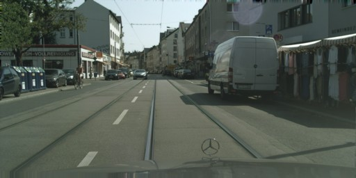
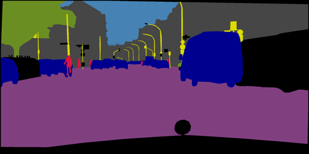
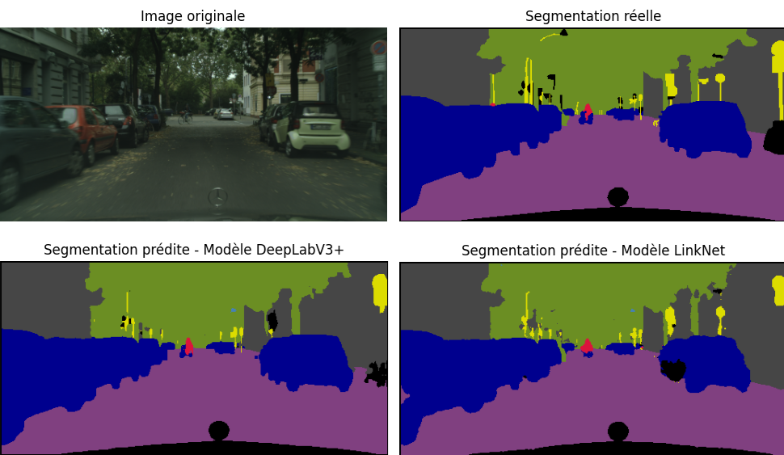
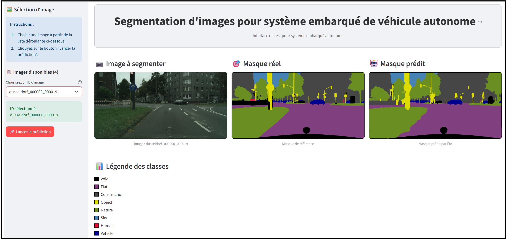

Contexte & Problématique
Au sein de l'équipe R&D de l'entreprise fictive Future Vision Transport, l'objectif est de développer un modèle de segmentation sémantique d'images de conduite urbaine, capable de s'intégrer dans la chaîne embarquée d'un véhicule autonome. Les modèles doivent permettre d'identifier pixel par pixel 8 catégories de l'environnement routier. Les modèles ont été entraînés et évalués sur le dataset Cityscapes.
Démarche
- Préparation du dataset Cityscapes
- Pipeline industrialisable avec Data Generator Keras : chargement des images à la volée, prétraitements, data augmentation
- Implémentation de différentes architectures CNN Encoder–Decoder avec TensorFlow
- Benchmark de 5 architectures : FCN8, U-Net (custom), U-Net+EfficientNet, LinkNet+MobileNet, DeepLabV3++Xception
- Développement d'une API FastAPI déployée sur AWS EC2
- Application web Streamlit de visualisation déployée sur le cloud
Présentation des données
Cityscapes est un jeu de données de référence pour la segmentation sémantique en conduite urbaine. Il contient 5 000 images de scènes de rue annotées finement, capturées dans 50 villes d'Europe, avec des masques de segmentation pixel par pixel répartis en 32 sous-catégories. Dans ce projet, ces sous-catégories sont regroupées en 8 classes principales pour simplifier la tâche de segmentation.
Image originale

Masque de segmentation

Légende
Pipeline
Comparaison des architectures
Résultats obtenus sur un ensemble de test de 790 images.
| Architecture | Backbone | Temps train (min) ↓ | Temps inf. (s) ↓ | mIoU ↑ | mDice ↑ |
|---|---|---|---|---|---|
| FCN8 | VGG16 | 60 | 518 | 0.616 | 0.710 |
| U-Net | Custom | 74 | 462 | 0.576 | 0.672 |
| U-Net | EfficientNet | 67 | 364 | 0.680 | 0.764 |
| LinkNet ★ DÉPLOYÉ | MobileNet | 44 | 243 | 0.640 | 0.733 |
| DeepLabV3+ | Xception | 79 | 399 | 0.697 | 0.776 |
Pourquoi LinkNet plutôt que DeepLabV3+ ?
Bien que DeepLabV3+ obtienne les meilleures performances globales (mIoU : 0.697), son temps d'inférence élevé le rend inadapté à un système embarqué nécessitant des prédictions en temps réel. LinkNet + MobileNet a été retenu pour sa légèreté : avec un temps d'inférence de 243 s sur l'ensemble de test (contre 399 s pour DeepLabV3+), il offre le meilleur compromis précision / vitesse pour une application de conduite autonome embarquée.
Résultats clés
Visuels
Comparaison DeepLabV3+ vs LinkNet

Interface Streamlit de test
